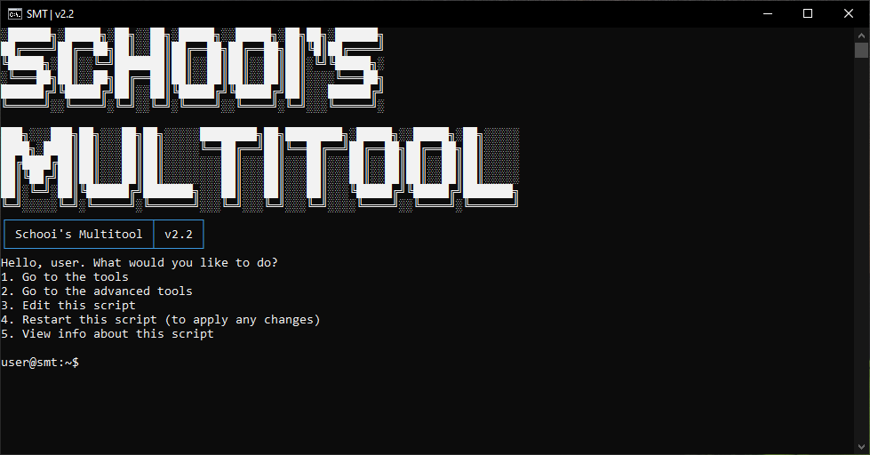

Over 90 powerful tools for Windows — IP Geolocation, Activation, USB Creator, DNS Changer, and more.
A batch-powered developer toolbox with tools for networking, system utilities, Windows & Office activation, security research, app installers, and more.

What began as a small collection of batch scripts has become a massive developer toolbox with over 90 tools. SMT streamlines everything from network diagnostics and system activation to automated app installations and security research.
Version 2.3 brings a Bootable USB Creator, Easy DNS Changer, School Utilities, Auto-Update System, and much more — all accessible from a clean console interface.
SMT packs over 90 utilities. Here are a few highlights:
Quickly locate IP addresses globally with detailed geographic information.
Advanced activation tool for Windows and Office products using multiple methods.
Create multi-boot USBs easily with Ventoy — ideal for OS installations.
Manage and monitor system tasks efficiently from the command line.
Credential Logger, File Integrity Checker, and Info Stealer Generator (for research).
Explore the full toolkit — DNS changer, school utilities, app installers, and more.